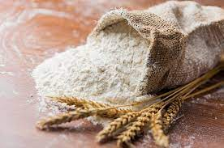

Es el polvo fino que se obtiene del cereal molido y de otros alimentos ricos en almidón.
Se puede obtener harina de distintos cereales. Aunque la más habitual es la harina de trigo (cereal proveniente de Asia, elemento habitual en la elaboración del pan), también se hace harina de centeno, de cebada, de avena, de maíz (cereal proveniente del continente americano) o de arroz (cereal proveniente de Asia). Existen harinas de leguminosas (garbanzos, judías) e incluso en Australia se elaboran harinas a partir de semillas de varias especies de acacias (harina de acacia).
El denominador común de las diversas harinas vegetales es el almidón, que es un carbohidrato complejo.
En Europa suele aplicarse el término harina para referirse a la de trigo, y se refiere indistintamente tanto a la refinada (blanca) como a la integral, por la importancia que esta tiene como base del pan, que a su vez es un pilar de la alimentación en la cultura europea. El uso de la harina de trigo en el pan es en parte gracias al gluten. El gluten es una proteína compleja que le otorga al pan su elasticidad y consistencia.
